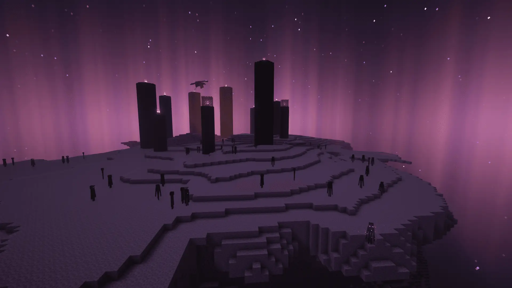
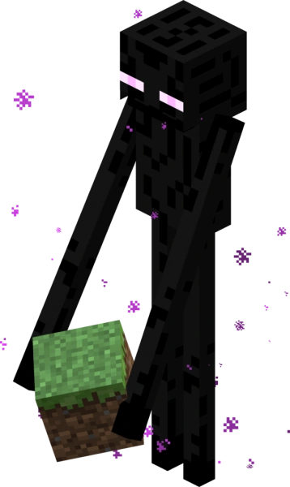
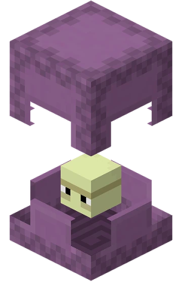
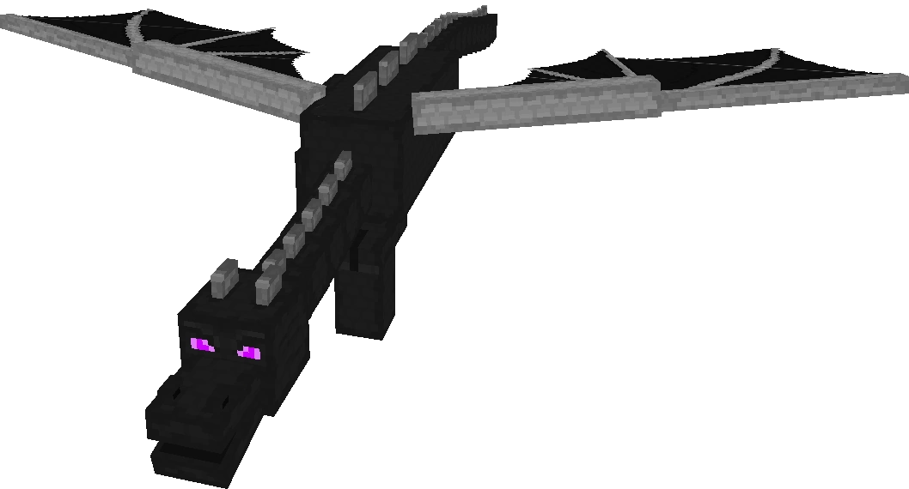
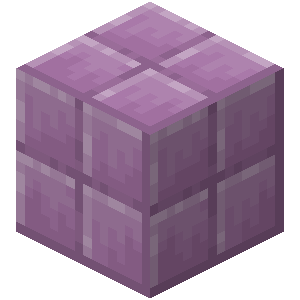
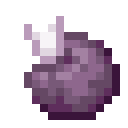
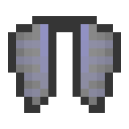
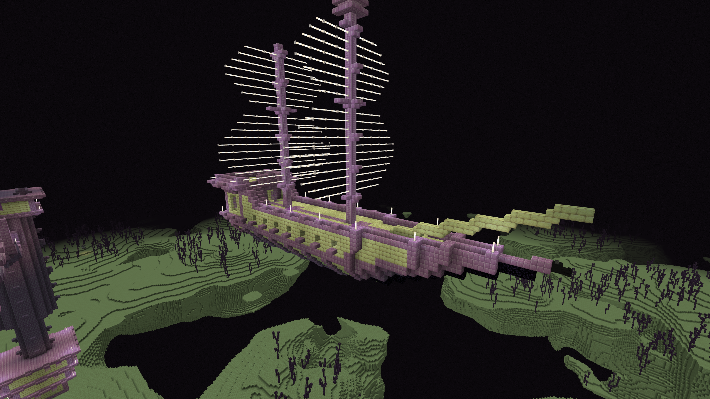

El End
El End es la dimensión final de Minecraft. Es un lugar misterioso compuesto por islas flotantes de piedra del End rodeadas por un vacío infinito. Aquí se encuentra el jefe final del juego: el Dragón del End.
Tras derrotar al dragón, el jugador puede explorar las islas exteriores para encontrar ciudades del End, naves del End y valiosos tesoros.

Criaturas del End
Enderman
Los Enderman son criaturas neutrales que habitan principalmente en el End. Pueden teletransportarse y se vuelven hostiles cuando el jugador los mira directamente a los ojos.

Shulker
Los Shulkers protegen las ciudades del End. Disparan proyectiles que provocan levitación, dificultando el combate y la exploración.

Dragón del End
Es el jefe final de Minecraft. Vuela alrededor de la isla principal destruyendo bloques y atacando al jugador mientras se cura mediante los cristales del End.

Bloques y Materiales
Piedra del End
Es el bloque principal de las islas del End.

Purpur
Bloque decorativo fabricado utilizando frutas de chorus.

Fruta de Chorus
Al consumirla puede teletransportar al jugador a una ubicación cercana.

Elytra
Es el mayor atractivo del end debido a que otorga al jugador la capacidad de planear.

Estructuras del End
Ciudad del End
Grandes construcciones de Purpur donde habitan los Shulkers. Contienen cofres con equipamiento de gran valor.

Nave del End
Estructura especial donde se encuentra la Elytra, uno de los objetos más valiosos del juego.
